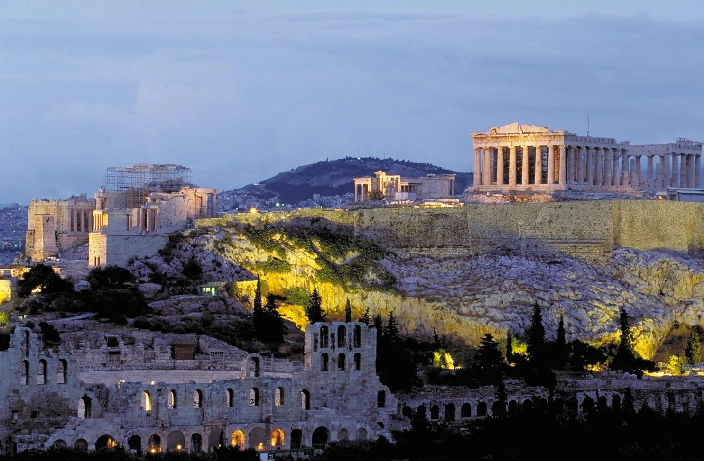

Homepage
Places & People
Data
Quiz
Athens – trivia quiz
Answers
Question 1
. Where does Athens place in terms of population size, compared to other cities in the European Union?
Athens is currently the
8th
largest urban area in the European Union.
Question 2
. What is the correct name for the temple dedicated to the goddess Athena?
Parthenon
is the temple's name.
Question 3
. What is the name of the Athenian hill which hosts, among other things, the temple just mentioned?
The name of the landmark hill is
Acropolis
.
Question 4
. Select pictures showing iconic landmarks or scenery of Athens.

This picture shows
the Acropolis of Athens.
This image portrays
the Odeon of Herodes Atticus
, which is an ancient theatre in
Athens
.
The remaining pictures were of Rome's Colosseum and an Aztec temple.
Question 5
. Every how many years are the Olympic Games held, which started in their modern form in 1896 in Athens?
There is an Olympic Games event held
every two years
overall. However, each individual type of games — Summer or Winter — is held
every four years
.
Question 6
. Which form of government is Athens said to be the cradle of?
Democracy
is the system of goverment first established in Athens around 508 BC.
Question 7
. What is the name of the central square located in the heart of Athens, just next to the Greek Parliament?
Syntagma Square
is the name of the bustling hub of the city.
Feel free to share any feedback you may have regarding the quiz:
You may also write directly to our e-mail:
Athens_Greece@gmail.com